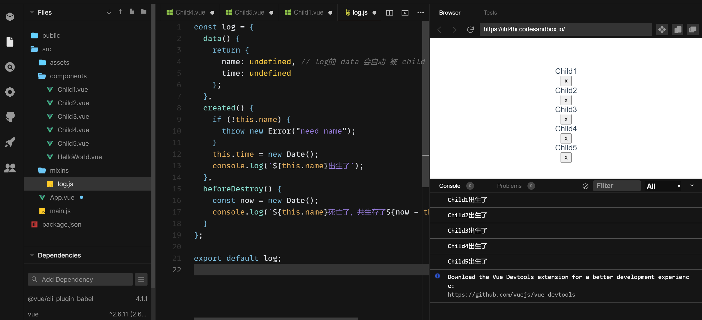

Vue进阶构造属性
Directive 指令
内置指令:
- 声明一个全局指令:
Vue.directive('x',directiveOptions)就可以在任何组件里用 v-x 了1
2
3
4
5
6
7
8
9
10
11
12// main.js
Vue.directive('x',{
// 当被绑定的元素插入到 DOM 中时...
inserted:function(el){
el.addEventListener('click',()=>{console.log('xxx')})
}
})
// App.vue
<div>
<img v-x src='...'>
</div>
- 声明一个局部指令:
- `new Vue({
…,
directives:{
}"x":directiveOptions
})`
v-x 只能用在该实例中1
2
3
4
5
6
7
8
9
10
11
12
13
14
15// HelloWord.vue
<template>
<div>
<h1 v-x >HelloWord</h1>
</div>
</template>
<script>
directives:{
"x":{
inserted(el){
console.log('xxx')
}
}
}
</script>
directiveOptions 里有哪些属性呢？
五个函数属性: 文档
- bind(el,info,vnode.oldVnode) - 类似created
- inserted(参数同上) - 类似 mounted
- update(参数同上) -类似 updated
- componentUpdated(参数同上) -用得不多
- unbind(参数同上)-类似destroyed
栗子: 自制 v-on2 指令，模仿 v-on
1 | import Vue from 'vue/dist/vue.js' |
指令的作用：
主要用于DOM操作
mixins 混入(复制)
mixins的目的：减少重复
类比
- directives 的作用是 减少 DOM 操作的重复
- mixins 的作用是减少 data、methods、钩子的重复
场景描述
- 假设我们需要在每个组件上添加 name 和 time,在 created、beforeDestroyed时，打出提示，并报出存货时间，且一共有5个组件，问：该怎么做？
- 答：1、给每个组件添加data和钩子，共5次
- 答：2、或者使用mixins 减少重复
- 示例代码
 - 总结： mixins 就是将 共用属性 复制到 一个组件中
mixins 技巧
- 选项智能合并 文档
- Vue.mixin 见文档，不推荐使用
extends 继承
- extends 是比 mixins 更抽象一点的 封装，本质是一样的
- 如果 嫌写五次 mixins:[log] 太麻烦，可以考虑 extends
作用： 减少重复
- 与 mixins 同样的需求
1
2
3
4
5
6
7
8
9
10
11
12
13
14
15
16
17
18
19
20
21
22
23
24-- myVue.js --
import Vue from 'vue'
const myVue = Vue.extend({
// mixins:[log] 也可以直接写这个
data() {
return {
name: undefined, // log的 data 会自动 被 child 的 data 合并
time: undefined
};
},
created() {
if (!this.name) {
throw new Error("need name");
}
this.time = new Date();
console.log(`${this.name}出生了`);
},
beforeDestroy() {
const now = new Date();
console.log(`${this.name}死亡了，共生存了${now - this.time} ms`);
}
})
export default myVue - Child1.vue
1
2
3
4
5
6
7
8
9
10
11
12
13
14
15
16<template>
<div>Child1</div>
</template>
<script>
import myVue from '@/myVue.js'
export default {
extends:myVue,
data() {
return {
name: "Child1",
};
},
};
</script>
provide(提供) 和 inject(注入)
使用示例：
需求:
- 一键换肤功能： 默认蓝色，可以切换成红色
- 文字大小：默认正常，可以改成大或小
- 示例代码
1
2
3
4
5
6
7
8
9
10
11
12
13
14
15
16
17
18
19
20
21
22
23
24
25
26
27
28
29
30
31
32
33
34
35
36
37
38
39
40
41
42
43
44
45
46
47
48
49
50
51
52
53
54
55
56
57
58
59
60
61
62
63
64
65
66
67
68
69
70
71
72
73
74
75
76
77
78
79
80
81
82
83
84
85
86
87
88
89
90
91
92// -- App.vue --
<template>
<div :class="`app theme-${themeName} fontSize-${fontSizeName}`">
<Child1/>
<button>x</button>
<Child2/>
<button>x</button>
<Child3/>
<button>x</button>
<Child4/>
<button>x</button>
<Child5/>
<button>x</button>
</div>
</template>
<script>
import Child1 from '@/components/Child1.vue'
import Child2 from '@/components/Child2.vue'
import Child3 from '@/components/Child3.vue'
import Child4 from '@/components/Child4.vue'
import Child5 from '@/components/Child5.vue'
export default {
name: "App",
provide(){// 把需要用到的 提供给所有人
return{
themeName:this.themeName, // 这里只是相当于复制了 data.themeName 的 字符串
changeTheme:this.changeTheme,
changeFontSize:this.changeFontSize
}
},
data(){
return{
themeName:"blue",
fontSizeName:"normal"
}
},
methods:{
changeTheme(){
if(this.themeName === 'blue'){
this.themeName= 'red'
}else{
this.themeName = 'blue'
}
},
changeFontSize(name){
if(['normal','big','small'].indexOf(name)>= 0 ){
this.fontSizeName = name
}
}
},
components: {Child1,Child2,Child3,Child4,Child5,}
};
</script>
<style>
.app {
font-family: "Avenir", Helvetica, Arial, sans-serif;
-webkit-font-smoothing: antialiased;
-moz-osx-font-smoothing: grayscale;
text-align: center;
color: #2c3e50;
margin-top: 60px;
}
.app.theme-blue button{
background:blue;
color:white
}
.app.theme-blue{
color:darkblue
}
.app.theme-red button{
background:red;
color:white
}
.app.theme-red{
color:darkred
}
.app.fontSize-small{
font-size:8px;
}
.app.fontSize-big{
font-size:32px
}
.app.fontSize-normal{
font-size:14px;
}
.app button{
font-size:inherit
}
</style>1
2
3
4
5
6
7
8
9
10
11
12
13
14
15
16
17
18
19
20
21-- changThemeButton.vue --
<template>
<div>
<button @click="z">换肤</button>
<button @click="changeFontSize('big')">大字</button>
<button @click="changeFontSize('small')">小字</button>
<button @click="changeFontSize('normal')">正常字</button>
</div>
</template>
<script>
export default {
inject:['themeName','changeTheme','changeFontSize'],// 把需要用到的 放到自己身上
methods:{
z(){
this.changeTheme()
},
}
}
</script>总结：
- 作用： 大范围的 data 和 method 等共用
- 注意：不能只传 themeName 不传 changeTheme,因为 themeName 的值是被复制给 provide
1
2
3
4
5
6
7
8methods:{
z(){
this.ThemeName = 'red' // 不能直接去赋值，因为字符串拿来的时候已经复制了，改复制品是没有用的
this.changTheme() // 应该直接调用函数
// 也可以用引用 themeName:{value:'blue'}, 不推荐使用，容易失控
}
}
总结:
directives 指令
- 全局用 Vue.directive(‘x’,{})
- 局部用 options.directives
- 作用是减少DOM 操作相关重复代码
mixins 混入（复制）
- 全局用 Vue.mixins({})
- 局部用 options.mixins:[mixin1,mixin2]
- 作用是减少 options 里的重复
extends 继承/扩展
- 全局用 Vue.extend({})
- 局部用 options.extends:{}
- 作用 跟 mixins 差不多，只是形式不同
provide / inject 提供和注入
- 前人提供东西，后代注入东西
- 作用是大范围、隔N代共享信息（属性、方法等）
All articles in this blog are licensed under CC BY-NC-SA 4.0 unless stating additionally.